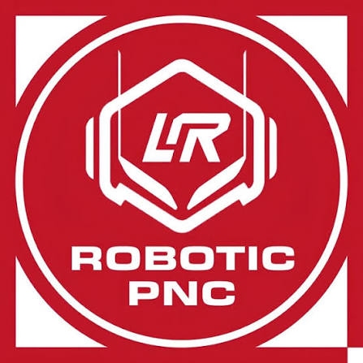
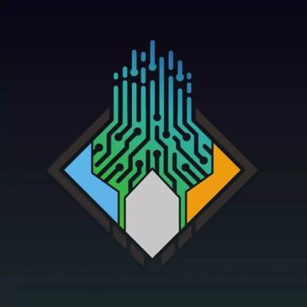
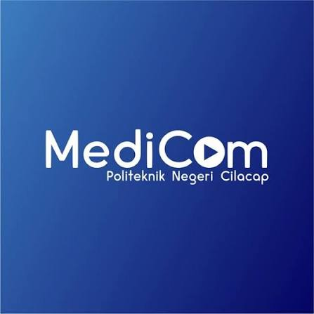
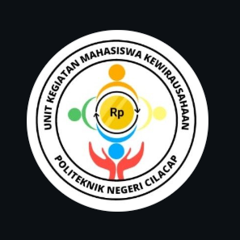
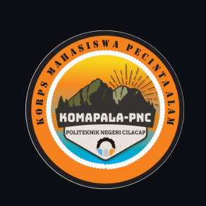
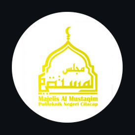

Temukan Minatmu, Kembangkan Potensimu!
Selamat datang di Informasi UKM PNC. Kenali berbagai bidang kegiatan mahasiswa, mulai dari teknologi, robotika, kesehatan, hingga kewirausahaan.
Lihat ProfilJelajahi Bidang yang Kamu Sukai
ROBOTIC

Tertarik merakit robot, mempelajari sensor, dan mengembangkan teknologi otomatis? Kenali Logic Robotic PNC.
PROTIC

Ingin belajar membuat website, aplikasi mobile, desain UI/UX, atau mendalami pemrograman? Cari tahu tentang PROTIC.
MEDICOM

Tertarik membuat desain grafis, mengembangkan kreativitas visual, atau belajar fotografi dan videografi? Kenali UKM Medicom PNC.
KEWIRAUSAHAAN

Belajar mengembangkan ide bisnis, menyusun strategi, dan melatih kreativitas untuk menciptakan peluang usaha.
KOMAPALA

Suka menjelajahi alam, melakukan pendakian, dan menjaga lingkungan? Kenali UKM Korps Mahasiswa Pecinta Alam (KOMAPALA).
MAJLIS AL MUSTAQIM

Ingin memperdalam ilmu agama dan mengikuti kegiatan keislaman di kampus? Kenali UKM Majlis Al Mustaqim.
Apa Manfaatnya untuk Mahasiswa?
Belajar Hal Baru
Mendapatkan pengalaman di luar materi perkuliahan dan mencoba kemampuan yang belum pernah dipelajari.
Melatih Kerja Sama
Belajar membagi tugas, berdiskusi, dan menyelesaikan pekerjaan bersama anggota tim.
Membangun Portofolio
Pengalaman proyek, karya, dan kegiatan dapat menjadi bahan untuk menunjukkan kemampuan diri.